Cinque serate,
cinque dehors unici,
cinque esperienze imperdibili!
30 giugno
Mi abbatto e sono feliceby Mulino ad ArteCibo e bevande da Casa del Quartiere DonatelloSpettacolo alle 21:00Casa del Quartiere DonatelloSpettacolo gratuito - cibo e bevande con contributo fissoPrenota ora!
1 luglio
Belli FreschiAperitivi e cena dal Chiosco Risto&BarConcerto alle 21:00Chiosco Risto&BarConcerto gratuito - aperitivi, panini, toast e bevandePrenota ora!
2 luglio
Tom Newton TrioAperitivi e cena da San Sebastian CaféA partire dalle 19:00San Sebastian CaféConcerto gratuito - aperitivi, cibo e bevande alla cartaPrenota ora!
3 luglio
BandakadabraCibo e bevande di Open BaladinConcerto alle 21:00Open baladinConcerto gratuito - aperitivi, cibo e bevande alla cartaPrenota ora!
4 luglio
Gran Bal DubCibo e bevande della BirroviaConcerto alle 21:00BirroviaConcerto gratuito - aperitivi, cibo e bevande alla cartaPrenota ora!
I CunicolantiPer diventare Cunicolante non devi far altro che lasciare un piccolo contributo libero quando prenoti tramite i link presenti nel sito.
Il tuo nome apparirà qui sotto!
I nostri partner
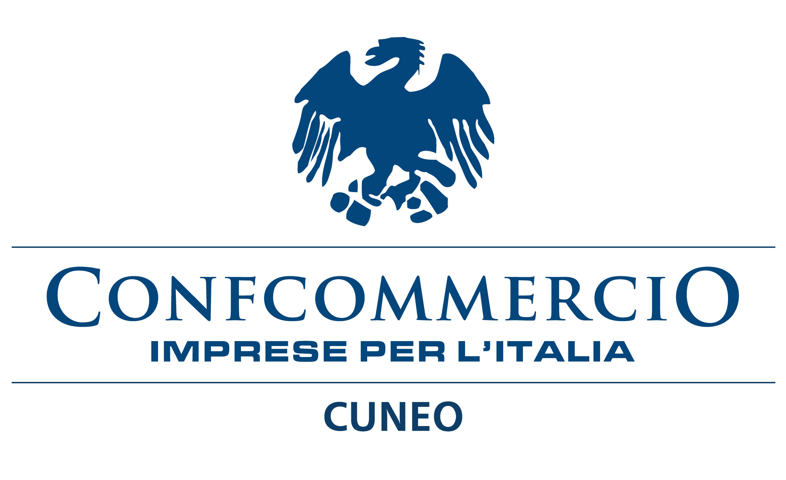
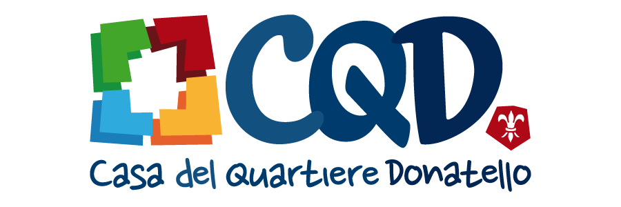
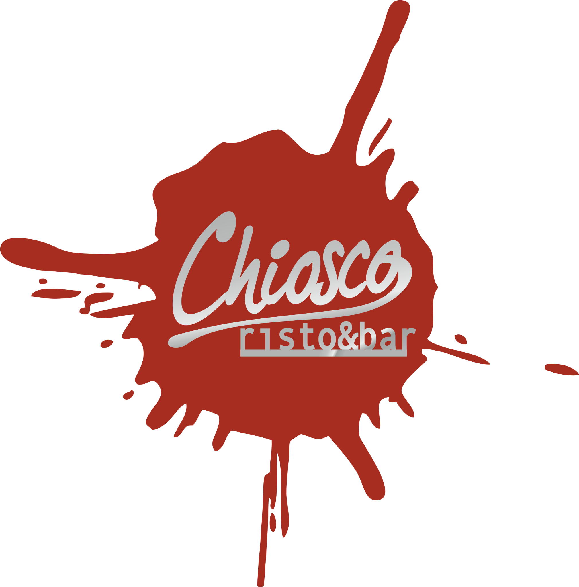
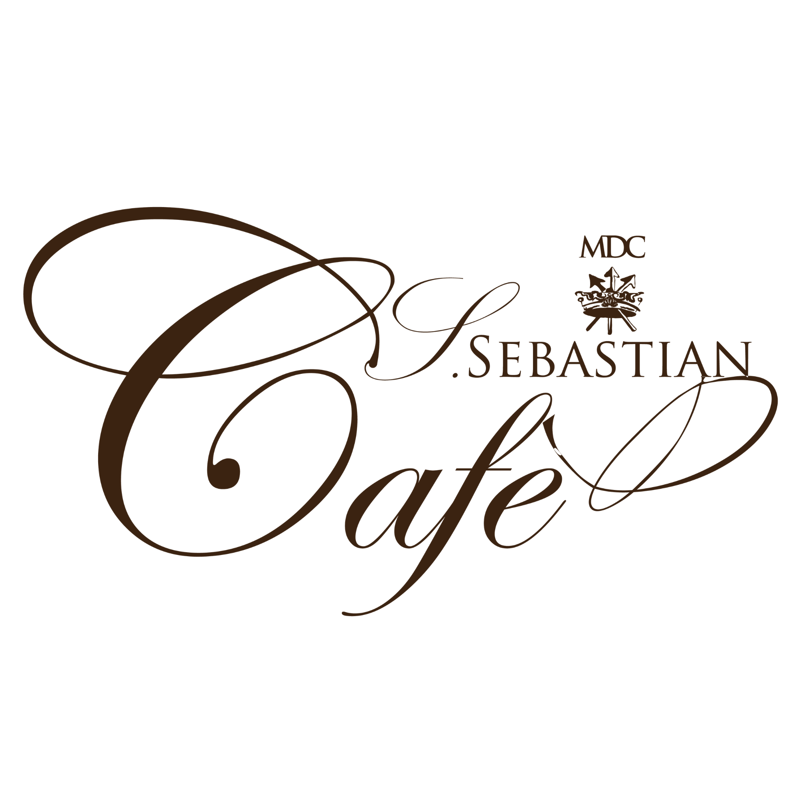
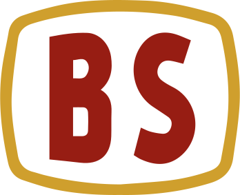
I nostri service tecnici
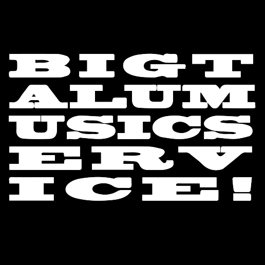
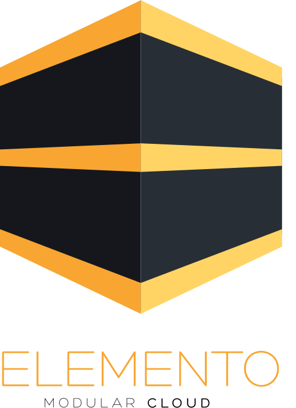
Chi siamo


 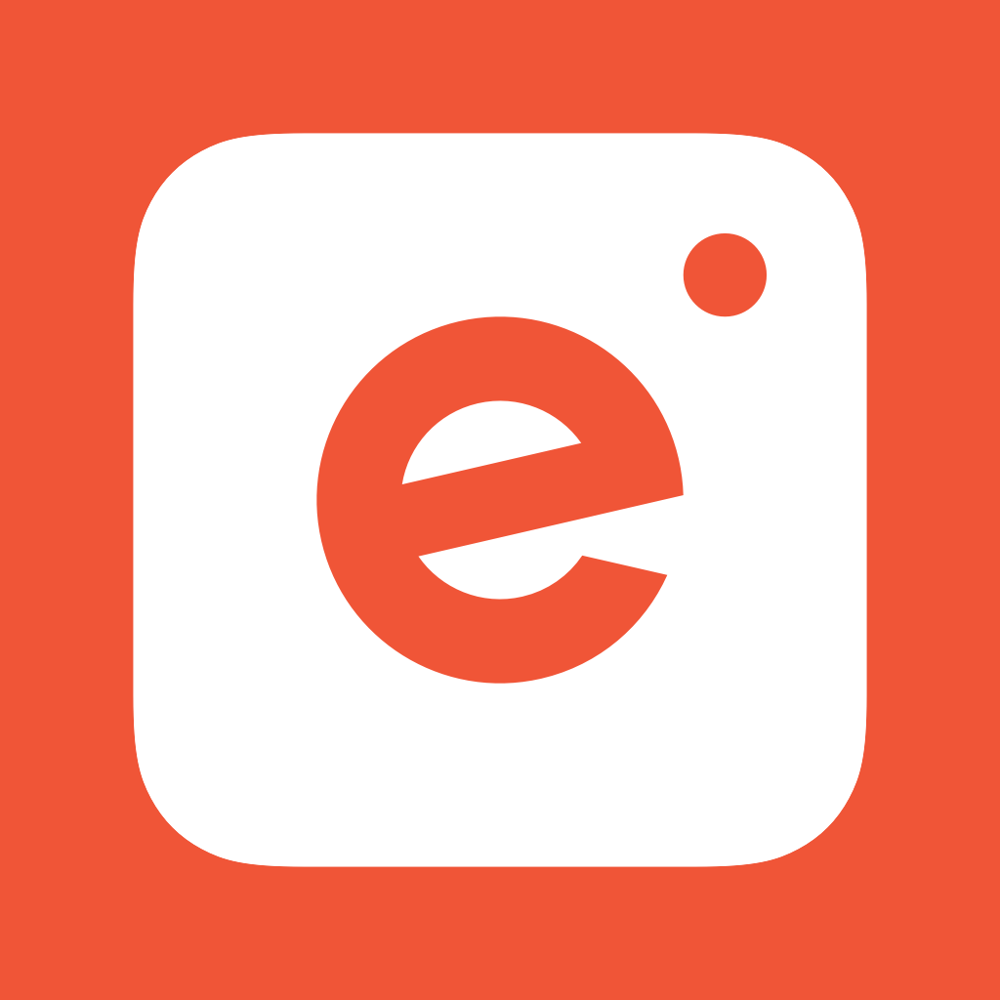
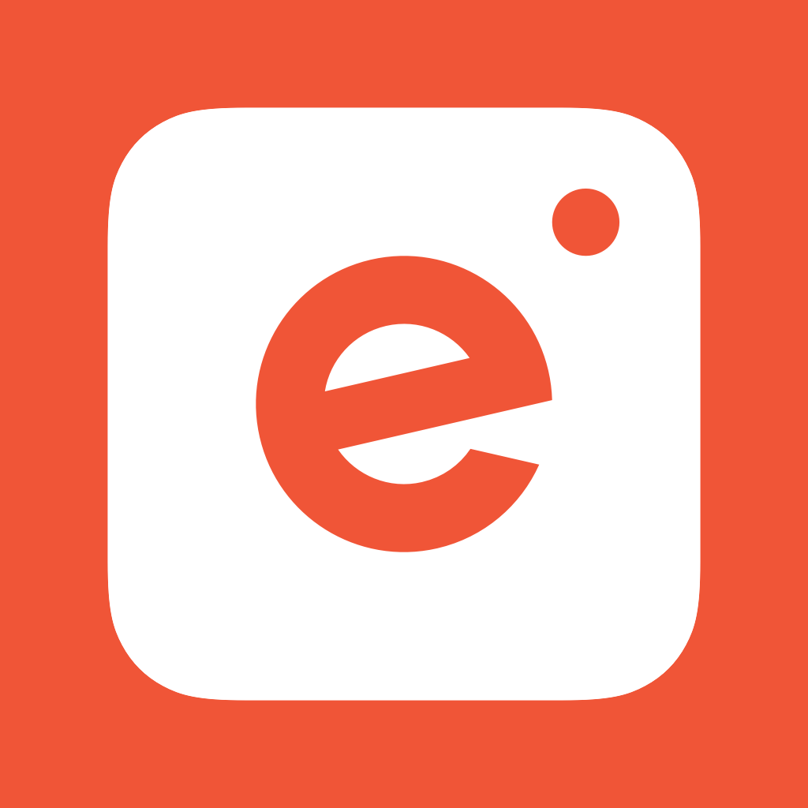
 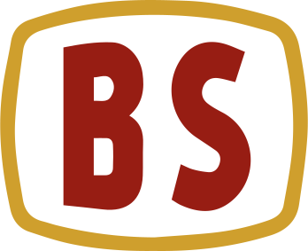
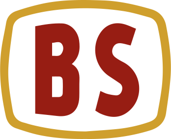